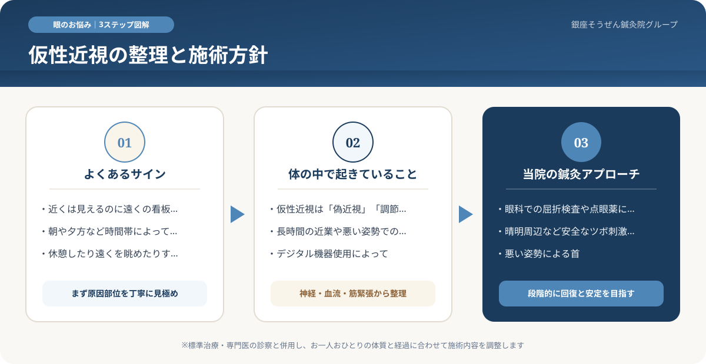

仮性近視の鍼灸
近くを見続けることで毛様体筋が緊張し一時的に遠くがぼやける状態です。眼科検査と併用しピント調節の負担を和らげます。
まず知っておきたい要点と改善の流れ

仮性近視は「偽近視」「調節緊張」「調節痙攣」とも呼ばれ、長時間の近業や悪い姿勢での読書・デジタル機器使用によって、水晶体の厚みを調節する毛様体筋が過度に緊張したまま戻らなくなる一時的な状態です。本来は近くを見るときだけ働くピント合わせが遠くを見るときも続いてしまい、視界がぼやけます。放置すると真性の近視へ移行するおそれもあるため、眼科で散瞳剤を用いた検査を受けることが大切です。
このようなお悩みはありませんか？
- ✓近くは見えるのに遠くの看板や黒板がぼやける
- ✓朝や夕方など時間帯によって見え方が変動する
- ✓休憩したり遠くを眺めたりすると一時的に見やすくなる
- ✓スマホや読書を長く続けると目が疲れやすい
当院の施術アプローチ・改善の流れ
なぜ鍼灸で改善へ向かうのか？（作用機序の図解）
仮性近視に対する鍼灸は、後頸部〜眼周囲の微小循環と毛様体筋・自律神経調整機序を通じて、お体本来の回復力を引き出します。

眼球周囲の危険な深刺しを避け、風池・天柱・合谷・太衝など安全な経穴へ繊細に施術します。
PC・スマホ作業や緊張で固まった首深層筋と眼輪筋周囲の血流を促し、重だるさを軽減します。
交感神経優位による目の乾き・ピント調節疲労を鎮め、涙液分泌とリラックス反応を助けます。
眼科の点眼・定期検査を最優先としつつ、日々の眼精疲労や頭痛・肩こりの連鎖を整えます。
院長YouTube解説・関連動画
公開日：２０１９年１２月２３日
更新日：２０２３年 ９月 ５日
本日は仮性近視について解説させていただきます。
☆本記事の内容
- •仮性近視とは
- •仮性近視の症状
- •仮性近視の原因
- •仮性近視の改善法
- •仮性近視にかかる費用
- •仮性近視のまとめ
- •一時的に近視の状態になる仮性近視
- •仮性近視は遠くにあるものが見えにくい
- •仮性近視の原因は悪い姿勢で物を見続ける習慣
- •仮性近視では近くにピントを合わせ続ける作業は避ける
- •仮性近視と眼科
- •仮性近視は近視の初期段階ともいう
- •仮性近視の改善例
銀座そうぜん鍼灸院の宗前です。
このページを書いている私は、鍼灸師として１３年、担当した利用者様数８０，０００人を誇り、病気の休職者３００人を社会復帰できるまで回復させてきた実績があります。
仮性近視の原因は悪い姿勢で物を見続ける習慣
近年、デジタル機器の普及により若年層にもおこりやすい仮性近視の原因は、読書やパソコン、携帯電話や携帯ゲーム機などの液晶画面を近距離で長時間、見続けることです。
目の焦点を変えないため網様体筋が緊張で凝り固まり痙攣し水晶体を調節できずに厚いままでピントを合わすことができなくなります。よって一時的に近視状態になります。
つまり悪い姿勢で物を見続ける習慣が要因となります。
1. 調節障害
仮性近視の最も一般的な原因の一つは、調節障害によるものです。眼の調節能力は、眼の水晶体の形状を変えることで遠くと近くの焦点を調節することができます。しかし、長時間の近くでの集中作業やデジタルデバイスの使用などによって、眼の調節が疲労することがあります。その結果、遠くの物体がぼやけて見える仮性近視が生じる場合があります。
2. 瞳孔の調節
瞳孔は、明るさに応じて自動的に拡大または収縮する調節反応を持っています。暗い場所では瞳孔が拡大してより多くの光を取り入れることで視力を向上させ、明るい場所では瞳孔が収縮して過剰な光を調節することで視力を調整します。しかし、瞳孔の調節が適切に行われない場合、遠くの物体がぼやけて見える仮性近視が現れることがあります。
3. 環境要因
環境要因も仮性近視の原因として関連しています。特に近視の方に多く見られることがありますが、長時間の近くでの読書やデジタルデバイスの使用、パソコン作業などが原因となることがあります。これらの活動によって、眼の調節や瞳孔の調節が疲労し、遠くの物体がぼやけて見える状態が生じることがあります。
4. 眼の屈折異常
仮性近視は、眼の屈折異常によっても引き起こされることがあります。特に遠視の方に見られることがありますが、眼の屈折異常によって光が網膜上で焦点を合わせる位置がずれるため、遠くの物体がぼやけて見えることがあります。
5. 視力低下
視力が低下している場合にも、遠くの物体がぼやけて見えることがあります。視力低下によって、光が十分に網膜上で焦点を合わせることが難しくなり、仮性近視が生じることがあります。
6. ストレス
ストレスは体の様々な機能に影響を及ぼすことがありますが、眼の調節機能にも影響を与えることがあります。ストレスが長期間にわたって続くと、眼の調節機能に疲労が蓄積され、遠くの物体がぼやけて見える仮性近視が現れることがあります。
7. 眼精疲労
長時間のデジタルデバイスの使用や近くでの集中作業によって、眼精疲労が引き起こされることがあります。眼精疲労によって、眼の調節機能や瞳孔の調節が乱れるため、仮性近視の症状が現れることがあります。
8. 視力の変動
一部の方は、日中に視力が変動することがあります。例えば、朝や夕方に視力が良く、昼間になると視力が低下する場合などがあります。このような場合にも、視力の変動によって仮性近視が生じることがあります。
以上が、仮性近視の主な原因についての解説です。仮性近視は一時的な状態であるため、原因が解消されると症状が改善することが一般的です。しかし、症状が持続する場合は眼科に行くことが重要です。
仮性近視の改善は眼科にて行います。改善には緊張を解くための点眼薬を使用することが多く、意識的に遠くを見る望遠訓練などが行われます。まずは予防が大切です。
仮性近視は近くのものを見続けることになって起こることがあります。そのため長時間、近くのものにピントを合わせる作業は避けましょう。
1. リラックスと休息
長時間の近くでの作業やデジタルデバイスの使用は、眼の調節機能に負担をかける原因となります。仮性近視の症状を軽減するためには、定期的な休息が必要です。20分から30分ごとに目を休めるために目を閉じたり、遠くを見たりすることが効果的です。休息を取ることで眼精疲労を軽減し、眼の調節機能を回復させることができます。
2. 視力補正
視力が低下している場合は、適切な眼鏡やコンタクトレンズを使用することで症状を改善できる場合があります。視力補正は、光が網膜上で正確に焦点を合わせることを助け、仮性近視の症状を軽減します。
3. 調節トレーニング
仮性近視の主な原因の一つは、眼の調節機能の疲労によるものです。調節トレーニングは、眼の調節機能を強化するための方法であり、仮性近視の改善に役立ちます。調節トレーニングは、特定の目の運動や焦点の切り替えを行うことで、眼の調節機能を向上させることができます。
4. ブルーライトカット眼鏡の使用
デジタルデバイスの使用は、眼精疲労の原因となります。特に画面から発せられるブルーライトは、眼にダメージを与える可能性があります。ブルーライトカット眼鏡を使用することで、ブルーライトの影響を軽減し、眼精疲労を予防することができます。
5. 屋外活動
屋外での遠くの視点を楽しむことは、眼の調節機能を活性化させる助けになります。定期的な屋外活動を取り入れることで、眼の健康を維持するのに役立ちます。また、屋外活動はストレス解消にもつながります。
6. 瞳孔の調節トレーニング
瞳孔の調節障害が仮性近視の原因となることがあります。瞳孔の調節トレーニングは、瞳孔の自動調節反応を改善するためのトレーニング方法です。特定の光刺激を用いることで、瞳孔の調節機能を刺激し、仮性近視の症状を改善することが期待されます。
7. ストレス管理
ストレスは眼の調節機能に影響を及ぼす可能性があります。ストレスを上手にコントロールすることで、眼の健康を保つことができます。リラックスする時間を持つことやストレスを和らげる方法を取り入れることで、仮性近視の症状を軽減することができます。
8. 眼精疲労対策
眼精疲労は仮性近視の症状を悪化させる原因となることがあります。眼精疲労を軽減するための対策を取ることで、仮性近視の症状を改善することができます。
眼精疲労対策としては、以下のような方法があります。
a. 20-20-20ルールの実践
長時間の近くでの作業やデジタルデバイスの使用は、眼精疲労を引き起こす原因となります。20-20-20ルールは、20分ごとに20フィート（約6メートル）離れた遠くの物体を20秒間見るという方法です。これにより、眼の調節機能をリセットし、眼精疲労を軽減することができます。
b. パソコン作業の環境整備
パソコン作業を行う際は、適切な作業環境を整えることが重要です。画面の高さや角度、明るさなどを調整し、眼への負担を軽減するように心掛けましょう。また、照明の調節や画面の点滅を抑える対策も眼精疲労の軽減に役立ちます。
c. 点眼液の使用
眼精疲労による眼の乾燥感や不快感を軽減するために、目薬や点眼液を使用することがあります。これにより眼の潤いを保ち、快適な視界を得ることができます。
d. マッサージやストレッチ
眼精疲労を緩和するために、眼の周りや額、目頭部分を優しくマッサージしたり、目のストレッチを行うことが効果的です。これにより、眼の疲れをほぐし、眼精疲労の症状を軽減することができます。
e. 適切な睡眠と休養
十分な睡眠と休養を取ることは、眼精疲労の回復に不可欠です。睡眠不足は疲労を増し、眼精疲労の症状を悪化させることがあります。充分な睡眠を確保することで、眼の調節機能の回復に役立ちます。
仮性近視の改善法は、眼の調節機能の改善や眼精疲労の対策、視力補正などが中心となります。しかし、症状が持続する場合や原因が不明な場合は、眼科医の専門的な判断と改善を受けることが重要です。自己判断せずに専門家のアドバイスを仰ぎながら、適切な改善方法を選択し、視力と眼の健康を保つことが大切です。
・長時間の携帯ゲーム・スマホ操作を避ける。
・テレビは3m以上距離をとって見る。
・読書、筆記は正しい姿勢で適切な距離をとる。
など、日常生活の予防がとても大切です。
眼科では保険適応可能です。仮性近視は本当の近視ではなく一時的な状態なので、適切に判断することが必要です。
調べる方法は、機械で視力や屈折をみる方法があります。通常の眼の状態で行った結果と、散瞳剤という目薬をして眼の調節機能を無効化した状態で行った結果を比較することにより判断します。
一度では正確に判断することは難しい場合も多いので、様子を見て再び調べることもあります。
仮性近視の改善法は、点眼薬で行います。薬の作用を用いて緊張している毛様筋を緩和させることによって、病状の改善を促します。
就寝前に点眼薬を使えば、就寝中に毛様筋の緊張が解け、視力の回復が望めます。
ただし、仮性でない近視の場合であるならば、点眼薬の使用によって若干の改善は見られるものの、根本的な改善には至りません。
仮性近視は、近視の初期段階とも言われています。
遠くのものを見るときに目を細めて見たり、テレビを見るときに近づいて見ることなど、あらゆる物体で特に遠くにあるものを見るときに見えにくいと自覚症状のあるものを総称して仮性近視というのです。
少しでも疑われる症状が出た際には専門機関へのご相談をお勧め致します。
網膜・黄斑・飛蚊症の眼底血流＆全身ツボ図解
実際の施術ではお一人おひとりの体質・症状に合わせて選穴しますが、加齢黄斑変性・網膜色素変性・飛蚊症の眼科併用・全身血流サポートの臨床でよく用いられる代表的なツボの目安です。

📌 代表的なツボの詳細一覧表を開く（6穴） ▼
| ツボ名 | 位置の目安 | 主な狙い | セルフケアの注意点 |
|---|---|---|---|
| 承泣（しょうきゅう） | 黒目の真下、眼窩の骨の縁 | 眼窩深部の血流サポート | 極めて繊細な部位のため自己流の強押しは厳禁です。 |
| 球後（きゅうご） | 下眼窩縁の外側4分の1のくぼみ | 網膜・視神経領域の循環アプローチで用いられる専門穴 | 必ず眼科での定期診察・標準治療と併用します。 |
| 風池（ふうち） | 後頭部の生え際のくぼみ | 頭頸部〜眼動脈領域の血流と自律神経調整 | 首の緊張を解くことで眼周囲の巡りを支えます。 |
| 肝兪（かんゆ） | 背中の中央やや下、背骨から指2本分外側 | 東洋医学で「目に栄養を送る」全身の血流・自律神経穴 | 背中を温めるケアも目の疲れに役立ちます。 |
| 腎兪（じんゆ） | 腰のくびれの高さ、背骨から指2本分外側 | 加齢に伴う視機能低下・全身の回復力サポート | 腰背部の冷えを防ぎ全身循環を底上げします。 |
| 光明（こうめい） | 外くるぶしの上から指6〜7本分上 | 古くから目の不調に用いられる下肢の重要遠隔穴 | 眼に負担をかけず遠隔から血流バランスを整えます。 |
国際査読論文の科学的エビデンス
国際的な医学データベース（PubMed・Cochrane等）で報告されている加齢黄斑変性・網膜色素変性・飛蚊症の眼科併用・全身血流サポート領域の代表的な査読済み鍼灸研究をまとめています（標準治療との併用や研究上の限界を含めて正確に掲載）。
📚 査読論文データ・PubMed出典リンクを開く（4件） ▼
| 年・研究デザイン | 対象・規模 | 主な結果 | 限界・出典 |
|---|---|---|---|
| 2024年 メタ解析 | ドライアイ 16試験（n=1,383：人工涙液併用） | BUT（SMD 1.25, P<0.0001）、シルマー試験（SMD 1.55, P<0.0001）、角膜染色・総有効率（OR 4.09）が有意改善。 | 自覚症状OSDIは有意差なし（P=0.15）。人工涙液との併用評価。 Medicine (PMID: 38181299) |
| 2019年 二重盲検RCT | ドライアイ 49名（米国・6か月追跡） | 実鍼群はOSDIスコアが1週〜6か月まで有意改善（6か月p<0.01）、乾燥感・充血も有意軽減。 | 小規模・客観的涙液指標（TBUT等）は有意差なし。 Clin Ophthalmol (PMID: 31114151) |
| 2020年 Cochraneレビュー | 緑内障・高眼圧症 3 RCTs（n=137） | 一時的な眼圧低下の報告はあるが8週時点で差消失、視力は有意差なし。 | 全試験が高バイアス・確実性非常に低。点眼治療の代替不可。 Cochrane (PMID: 32032457) |
| 2025年 メタ解析 | 変性眼疾患 21研究（緑内障・黄斑変性等） | 総有効率はOR 3.52（p<0.00001）だが、統合視力（p=0.50）・眼圧（p=0.11）に有意差なし。 | 非ランダム化研究含む。眼科標準管理下での補完研究段階。 Complement Ther Med (PMID: 40850524) |
参考文献・出典
- 2024年 メタ解析（ドライアイ 16試験（n=1,383：人工涙液併用））— Medicine (PMID: 38181299)
- 2019年 二重盲検RCT（ドライアイ 49名（米国・6か月追跡））— Clin Ophthalmol (PMID: 31114151)
- 2020年 Cochraneレビュー（緑内障・高眼圧症 3 RCTs（n=137））— Cochrane (PMID: 32032457)
- 2025年 メタ解析（変性眼疾患 21研究（緑内障・黄斑変性等））— Complement Ther Med (PMID: 40850524)
よくある質問（FAQ）
Q. 仮性近視と本当の近視はどう見分けますか？▼
Q. 子どもでも施術や相談は可能ですか？▼
あわせて読まれる関連疾患（眼のお悩み）
遠くの物がぼやけて見える屈折異常です。眼科での適切な矯正と生活習慣の見直しに加え、鍼灸で眼精疲労や緊張を和らげます。
ミトコンドリアDNA変異により急激な視力低下が生じる指定難病です。眼科治療と禁煙を最優先に安定期の心身ケアを支えます。
網膜の中心である黄斑に丸い穴が開き中心視力が低下する病気です。早期の眼科手術を最優先に、術後安定期の疲労をケアします。
長期の高血糖で網膜の細血管が傷む合併症です。内科・眼科での標準治療を最優先とし、安定期に主治医許可下で補完ケアを行います。
黄斑部に血漿成分が漏れ出し嚢胞状のむくみが生じる病気です。眼科での標準治療を最優先に、安定期の疲労・体調を支えます。
白目やまぶた裏の粘膜が炎症を起こす病気です。感染性は眼科受診を最優先に、アレルギー性の体質・免疫バランスを整えます。
CLINICAL RECOVERY CASES
✨ 実際の臨床改善事例・回復経過を見る
銀座本院をはじめ各院での実際の改善事例を症状別に絞り込んでご確認いただけます。
おひとりで悩まず、まずはご相談ください
銀座本院・川口・大宮・横浜・博多・田無の各院でご予約を承っております。